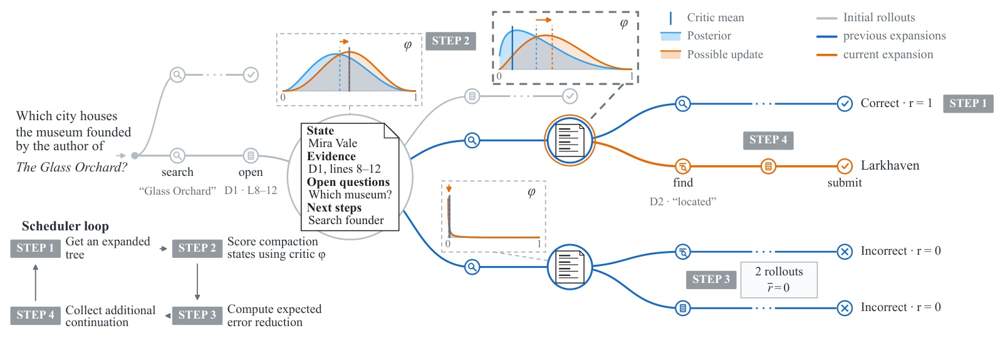
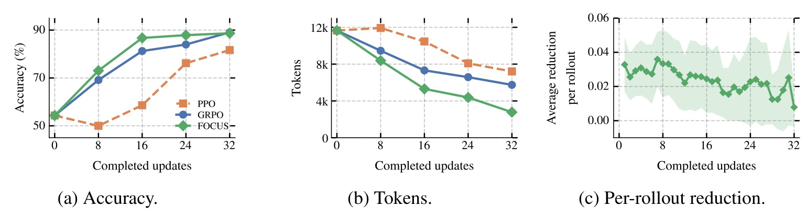
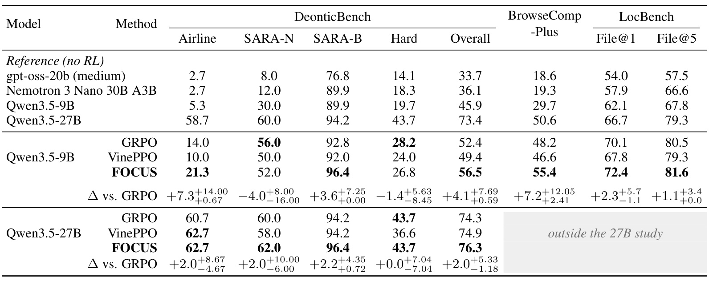
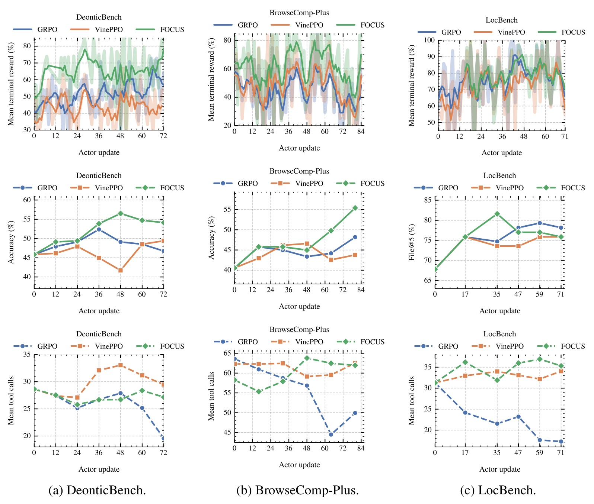
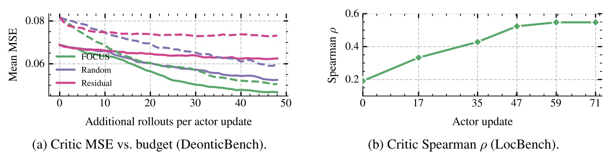
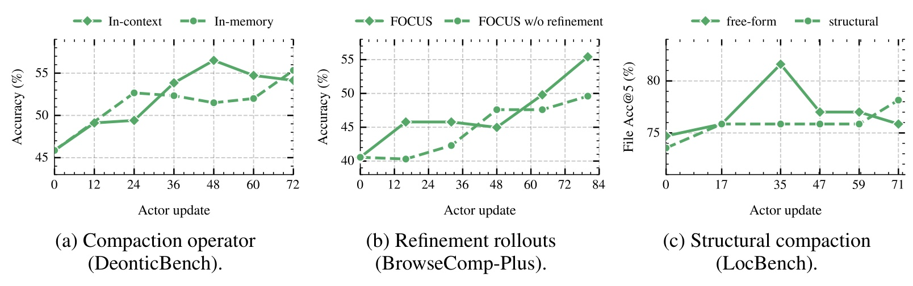
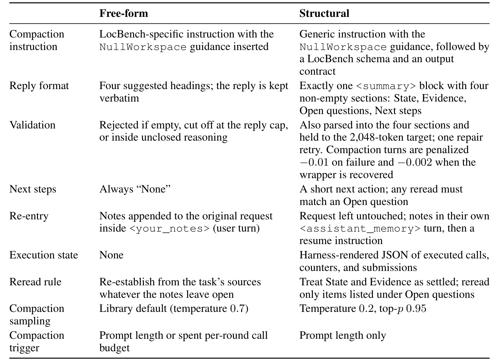

FOCUS：用主动采样训练长程智能体的价值评估器
FOCUS 研究如何在有限生成预算内，给长程语言模型智能体提供更可靠的中间价值和信用分配。Zhengping Jiang、William Jurayj、Liaoyaqi Wang、Chunsheng Zuo、Anqi Liu 与 Benjamin Van Durme 均署名约翰霍普金斯大学。论文于 2026 年 10 月 26 日公开，入口为 FOCUS: Active Critic Learning for Long-Horizon Language Model Agents。本文核验时间为 2026 年 10 月 28 日；论文脚注提供代码入口，但本轮独立访问返回 HTTP 404，不能宣称代码已经可用。
稀疏的终局奖励使长程语言模型智能体难以判断早期动作的贡献；学习得到的价值预测可能不准确，而从中间状态反复采样续行来估计价值又会消耗大量资源。有限续行预算应优先分配给哪些状态，才能最有效地改善价值估计？
1. 背景和问题
长程智能体的一个训练样本通常包含许多不同性质的动作：先搜索资料，再打开网页，发现信息不足后重新查询，最后综合证据提交答案；代码定位任务则可能先列目录、搜索符号、读取调用链，再报告疑似文件。最终评分器往往只给出是否答对或是否命中目标文件。终局结果能够告诉训练系统整条轨迹是否成功，却不能直接告诉它哪次检索真正推进了任务，哪次阅读重复了已知信息，以及哪次上下文整理避免了后续偏航。轨迹越长，相同终局信号覆盖的动作差异越大，把一个优势值广播到所有生成位置就越难区分有效探索和无效绕行。
GRPO 等方法通过同一问题的多条回答估计相对优势，省去了显式价值网络。在短答案、单轮推理中，分组结果可以给出清晰的相对监督；当一条回答包含数十次外部交互时，这种监督粒度依然停留在整条轨迹。成功回答中的普通铺垫可能被一起鼓励，失败回答中已经找到正确证据的片段也可能被一起惩罚。论文关注的并非终局评分器不存在，而是已有结果奖励如何被转化为更具体、可学习的中间信号。它没有引入人工逐步标注，也没有假设能获得每个工具调用的真实贡献标签。
显式 critic 提供另一种路径：输入当前上下文，预测从这里继续执行后获得的期望回报。相邻状态价值的变化可以形成时间差分信号，从而给两个状态之间的动作段分配优势。困难在于 critic 本身也需要训练。长程状态包含不完整证据、尚未解决的子问题和历史选择留下的约束；模型输出一个分数，并不意味着它确实理解了从该状态出发的成功概率。若训练直接依赖未经校正的分数，critic 的系统误差可能进一步误导 actor，尤其是在不同状态很少被重复访问、终局回报又十分稀疏时。
从同一中间状态多次采样后续执行，可以用真实终局结果校正价值预测。这个办法的优点是监督来自实际续行，而不是让另一个语言模型凭文字判断过程好坏；代价则是每次估值都可能需要重新搜索、读取和生成很长的后缀。若给所有状态分配相同续行数，容易在已经估得很准的状态上继续花钱，也可能忽略预测错误但样本不足的关键节点。VinePPO 等树状续行工作已经说明中间分支具有价值，FOCUS 进一步追问的是：新增的一次续行应该买在哪个状态上，才有最大的估值收益。
论文把这一决策写成针对 critic 的主动学习问题。与常见的选择困难问题、选择高奖励轨迹或选择不确定动作不同，这里选择的是“值得补充结果证据的状态”。一个成功率接近二分之一的状态确实存在高结果方差，但如果 critic 已经准确预测了它的均值，继续采样的用途和“critic 非常自信但预测错误”的状态不同。另一方面，仅按当前预测与已观测平均值的差距分配，也可能被极少数随机结果误导。FOCUS 因而同时考虑估计误差、结果方差和已有样本量，而不是把某个单一统计量直接当成重要性。
上下文压缩为这项设计提供了自然的状态边界。长程执行达到长度或调用次数阈值后，智能体把已有证据整理成摘要，再从较短上下文继续。两个压缩边界之间可视为一个动作段，边界处则适合作为恢复和分支的检查点。这样做不要求每个 token 都保存一份环境快照，也避免完全依赖任意固定长度切段。不过，摘要保留什么、环境能否重放、工具返回是否稳定，仍然会影响状态的含义。压缩边界是本实验的组织方式；FOCUS 的分支判定接口和压缩触发接口在设计上是分离的。
这个区分也界定了方法的适用范围。论文假设至少一部分中间状态容易被复制，且从那里重复采样是可行的。固定网页语料、可恢复的代码仓库或受控推理环境满足这一条件较容易；真实付款、不可逆外部写入或随时间变化的在线服务则不能直接照搬。状态不仅包括交给语言模型的摘要，还包括工具环境、计数器及终止状态。若只复制文字而漏掉环境状态，多条“同状态续行”实际上可能来自不同条件，后面的价值平均与贝叶斯更新就失去共同前提。方法层面的简洁并不消除这些执行要求。
对于推荐和搜索系统研究者，FOCUS 值得看的地方是预算分配与学习目标的衔接。多轮检索、推荐解释和个性化助手同样可能只有会话最终结果，且每次继续探索的成本不同。本文说明可以先问“哪些中间状态的价值预测最需要新证据”，再决定额外采样位置，而不必对每个候选动作都平均加预算。但论文实验并未验证推荐业务的长期收益，也没有解决真实用户反馈延迟、反事实暴露或用户隐私等问题；将它迁移到推荐场景需要重新定义状态、回报、可重放条件和完整成本核算。
阅读结果时还应分开三个问题：相同新增续行数下是否更快降低价值误差，相同生成预算下是否训练出更好的 actor，以及加入 critic 后总训练成本是否下降。论文对前两个问题给出了诊断和任务结果，对第三个问题只提供资源与协议信息，尚不能据此认定端到端训练更便宜。类似地，actor 使用更少工具调用也不自动代表效率更好：它可能学会更早得到答案，也可能学会过早提交。后文同时观察留出集正确率和调用数量，正是为了避免把行为变短误读成任务能力增强。
本文明确把获取新证据、上下文管理和信用分配作为可组合的不同接口。因而评价方法时，需要同时检查算法估值和执行状态恢复两层；某一层的正确性不能自动保证另一层可靠。
2. 方法
2.1 可恢复状态、树状续行与分段信用
论文用语言策略生成任务动作，以独立 critic 根据当前状态上下文预测后续回报。每个问题收集到的执行记录组成一棵树：非终端节点对应可以恢复的上下文与环境状态，边记录从一个节点到下一个节点之间生成的文字、工具动作、观测与奖励。完整执行路径从问题根节点到终端节点；上下文压缩可以产生新的节点，但接口允许按其他规则决定分支位置。训练开始时采集的根轨迹和已经探索的分支共同构成调度器的输入，后续预算只增加新的续行证据，不改变已执行路径的内容。

Figure 1 用一个需要查明博物馆所在地的深度检索问题串起整个训练循环。左侧灰色路径代表最初已经执行的搜索和网页阅读，中间文档形状的节点保存状态、证据、未解决问题和下一步计划。蓝色路径是先前扩展的续行，橙色路径是这一轮新采集的分支；每条路径最终都取得正确或错误的终局结果。上方小分布图把 critic 当前预测、已有结果形成的后验以及新增结果可能带来的更新画在一起，强调调度所依赖的不是“这条路径看起来有趣”，而是“再从这里执行一次，预计能纠正多少价值误差”。因此已有两次失败的下方节点和出现过成功的上方节点，可能获得不同的新增预算。
图中四个步骤按先取得当前树、再为候选状态计算 critic 分数、估算新增证据收益、最后采集续行的顺序循环。这里的节点文档不是人工给定的过程标签，而是智能体压缩上下文后继续执行的状态表示；图中的英语问题和城市名称属于原始示例，不能当成实验数据集事实。特别需要注意，橙色分支完成后，新的结果只更新它起始节点及这次新建节点的选择统计，而不是让所有祖先都机械多算一个样本。图展示的是训练阶段如何取得监督；部署 actor 时不要求保留这棵搜索树或继续运行 critic 主动学习循环。它把昂贵探索放进训练数据获取，最终希望由 actor 参数吸收收益。
每条边上的生成 token 共享该段优势，但环境观测和提示上下文不承担策略梯度。压缩摘要若由 actor 生成，也属于可训练 token，因为摘要是否保留关键证据会影响之后的动作。这个选择比只训练最终答案更贴近长程工具使用，但信用粒度仍然是段，不是对每次工具调用做独立因果归因。段划得过长会重新接近整轨迹监督，过短又会增加分支状态、critic 调用和执行快照管理成本。论文默认实验使用折扣因子为一、零步长混合和一个伪观测强度，后续公式中的权重应放在这些具体设置下理解。
2.2 递归价值细化与 actor、critic 的联合学习
收集结束后，FOCUS 自底向上细化价值。对一个节点，先把它每个直接孩子的边奖励与孩子自身的细化价值相加，再在直接孩子之间平均，而不是把所有后代叶子的结果放进一个大平均。这样做的原因是调度器会非均匀扩展后代；叶子多的子树未必代表从父节点出发更常见的行为。如果按叶子数量直接回传，主动采样就会在价值目标中引入额外的重加权。
符号解释：$\bar c$ 是当前可恢复状态的上下文，$\operatorname{ch}(\bar c)$ 是它的直接孩子集合，$n(\bar c)$ 是直接续行分支数，$R$ 是该段奖励，$d$ 是折扣所跨越的步数，$\gamma$ 是折扣因子，$\widetilde V$ 是细化价值。这个递归均值是 critic 训练目标的基础，终端后的剩余价值为零。它保留了每个直接分支作为一次局部选择的地位，避免某条分支仅因后来被反复扩展就支配父节点目标。
符号解释：$V_\phi$ 是参数为 $\phi$ 的 critic 预测，$\kappa$ 是固定伪观测强度，其他量沿用上式。没有直接续行时使用 critic 原预测；证据增多后，递归结果均值获得更多权重。这种混合允许有限预算下的未充分探索节点继续提供值，但也意味着 critic 的偏差不会立即消失。尤其当节点只有很少分支时，先验强度会影响价值回传；它不是从无限样本中直接得到的真实成功概率。
符号解释：$\mathcal T_x$ 是问题 $x$ 的执行树，求和只覆盖有直接续行证据的非终端状态，目标 $\bar G$ 在更新时固定。critic 学习的是收集阶段产生的递归监督，不能把当前参数同时代入目标再让梯度穿过整棵树。当前轮细化值用于训练 actor，而学到的 critic 会在后续轮次预测新状态。两种用途共享证据，但时间顺序不同：先收集与回传，再固定目标更新参数。
符号解释：第 $i$ 条边从 $\bar c_{i-1}$ 到 $\bar c_i$，$R_i$ 和 $d_i$ 分别是段奖励和跨度，$\widehat A_i$ 是该段优势。论文主文写出的形式对应默认 $\lambda=0$，附录给出一般 TD($\lambda$) 扩展；不能把摘要里的 TD($\lambda$) 表述理解为实验始终使用较长多步混合。若行动使后续价值上升，差分信号可以鼓励这个片段，但它依然依赖细化值的准确程度。
符号解释：$\theta$ 是 actor 参数，$y_{e_i}$ 是边内由策略生成的任务与压缩 token，$\pi_{\mathrm{old}}$ 是采集轨迹时的策略，$\rho_t$ 是 token 重要性比率，$\epsilon$ 为 PPO 裁剪范围。优势被停止梯度，观测和固定条件文字被屏蔽。FOCUS 的创新主要发生在“优势所需价值如何获得”，actor 更新仍采用熟悉的裁剪策略目标；因此它可以和不同上下文管理器结合，而不要求重新设计整个优化器。
2.3 按预期误差下降选择下一次续行
新增续行的分配另有一套统计，必须与上面的递归训练价值分开。选择器记录从某节点真正完成的续行结果数量，以及这些结果的平均回报。一次续行贡献给它自己的起点和这次沿途新建的节点；后来从一个后代再次分支，不会让更早祖先的观测数同步增加。直接孩子数用于训练回传，已完成结果数用于选择后验，二者不能混用。 对二值结果，论文以 critic 预测为中心构造固定强度的 Beta 先验，再估计 critic 平方误差。
符号解释：$v=V_\phi(\bar c)$ 是该轮固定的 critic 预测，$N$ 是已完成续行结果数，$\bar G_{\mathrm{obs}}$ 是这些结果的均值，$\mu_{\mathrm{obs}}$ 为选择后验均值，$\widehat e^2$ 估计 critic 均方误差，$\widehat\sigma^2$ 估计下一结果方差。平方误差既含预测与后验均值的差，也含后验不确定性。因此观测不足时不会把一次偶然成败完全当作真值；同时，选择后验不使用孩子的递归细化值，避免调度和回传相互形成过度乐观循环。
符号解释：$\operatorname{MSE}(N)$ 描述固定误差和结果方差近似下的混合估值误差，$g$ 是对样本量求导得到的边际下降代理，随后代入当前后验估计。调度器只在非终端、可恢复且 $g>0$ 的节点里挑选最高分者。它不是完整的全局搜索最优性定理，也没有显式比较不同续行长度的单位时间回报；执行预算仍按新任务转移计数消耗。该近似把难以直接观察的“再采一次会有多大帮助”转换成可更新的局部统计。
异步执行时，如果多次分配都只看已完成数，同一高分节点可能被重复派发过多任务。论文在获取分数中使用已完成数加在途数，但后验均值仍仅使用已经返回的结果；每节点最多同时两条续行，全局还受 worker 容量限制。预算耗尽后等待在途任务结束，再做最终自底向上细化。新增分支的总宽度没有固定上限，这和“只允许两个孩子”不同。由此形成完整闭环：固定 actor 与 critic 采样、逐次选择值得补证据的状态、等待真实结果、回传细化价值、更新 critic 和 actor，下一轮再利用更好的预测减少重复估值。
3. 实验结果
3.1 数学预实验：更快得到收益与更短回答
数学预实验使用 Qwen3.5-4B，在 MATH 难度四到五级问题上训练三十二次更新。训练集为五百一十二题，验证集为官方测试切分中的二百五十六题。PPO 每步使用六十四个问题，GRPO 和 FOCUS 每步使用十六个；GRPO 每题六条回答，FOCUS 每题拥有六十四条边的预算、每边最多二百五十六 token。作者将这些设置描述为粗略匹配训练计算，不能据此认为每步处理的问题数、梯度统计或实际设备时间完全相同。这一实验没有使用压缩，而是从推理前缀继续采样，也验证了调度机制不必绑定某种摘要格式。

Figure 2 的三个面板分别观察留出题正确率、每题生成长度和调度获取分数。横轴在前两幅图都是已完成更新次数，绿色为 FOCUS、蓝色为 GRPO、橙色为 PPO。FOCUS 在第八、十六和二十四次更新达到最高正确率，说明其较早训练阶段确实取得收益；但在第三十二次更新，它比 GRPO 少答对一道题，不能概括为整个训练过程中始终最好。这个小样本终点差异也提醒读者：早期曲线领先与最终准确率更高是两个判断，应分别观察，不能只选择对方法有利的检查点。
中间面板显示 FOCUS 回答长度下降更明显。第三十二次更新时，它平均每题生成二千七百八十二 token，GRPO 为五千七百四十七，PPO 为七千二百零七。由于相近正确率下输出更短，这支持策略减少冗余推理的解释；它仍然不是总训练费用的直接测量，因为训练中额外分支与 critic 开销没有包含在这一个推理长度指标里。右侧绿色阴影是每轮所有分配前获取分数的一个标准差，均值由早期到后期约下降一半。它反映当前规则预计的剩余纠错空间变小，不能单凭这个内部代理就宣称真实价值误差一定下降。后面的固定树审计提供了与结果目标相对独立的补充证据。
3.2 长程任务主结果：总体增益与不能忽略的反例
长程实验覆盖三种场景。DeonticBench 要求模型按真实规则文本判断义务、许可和禁止，本文聚焦 Airline、SARA-Numeric、SARA-Binary；工具包括列目录、检索、阅读和 Python。BrowseComp-Plus 在固定且经人工核验的语料上执行多跳检索，八百三十题被分为四百九十八训练、八十三验证、二百四十九留出题。LocBench 原始包含五百六十个代码问题，任务是定位补丁涉及的文件和函数；评价重点为所有正确文件是否进入前一个或前五个结果，训练奖励则用前五文件召回率。这些指标不同于真正生成修复补丁并通过测试，因此不能把文件定位提升写成代码修复成功率提升。

Table 1 的列先列法律规则推理的三个子域、困难集合与总体，再列深度搜索和代码定位。上方未训练模型只是参考，真正的方法比较应在同一 Qwen3.5 actor 尺度的 GRPO、VinePPO、FOCUS 三行之间进行。九十亿参数设置下，FOCUS 的 DeonticBench 总体正确率为百分之五十六点五，GRPO 为五十二点四，VinePPO 为四十九点四；相对 GRPO 增加四点一个百分点。BrowseComp-Plus 为五十五点四，对比四十八点二和四十六点六，相对最强基线增加七点二个百分点。法律总体与搜索两项的作者配对百分之九十区间下端分别为正零点五九和正二点四一，在这些既定比较条件下支持正向差异。
横向细看就会发现“每个基准总体最好”不意味着每列都最好。九十亿模型的 SARA-N 为五十二，低于 GRPO 的五十六；Hard 为二十六点八，低于二十八点二。LocBench 的 File@1 从七十点一到七十二点四，区间为负一点一到正五点七，包含零；File@5 从八十点五到八十一点六，区间下端为零。二百七十亿参数仅在 DeonticBench 上测试，FOCUS 总体七十六点三对比 GRPO 七十四点三，区间为负一点一八到正五点三三，同样不能宣称已获得明确统计优势。表中正向点估计、达到最好或并列最好、以及置信区间排除零，必须分开表述。
主表的区间还有取样和检查点边界。它们都是条件于已选检查点的边际配对区间，没有多重比较校正，不包含训练种子变化、随机解码以及留出集选点的不确定性。附录说明 DeonticBench 九十亿校正评估共有三百三十八例，分别为一百五十、五十和一百三十八题，困难集合七十一题与三个子域重叠；相关区间由作者提供，历史逐题导出不对应这组校正结果。BrowseComp 使用二百四十九题的报告分数及作者提供区间，但本地分析导出没有其逐题结果。因而当前阅读可以核对论文说明与数值关系，不能冒称已经用公开逐题文件独立重算全部统计。
LocBench 更需要保留评估版本信息。方法段介绍原始任务集和按库、问题类别分层的等分方案，附录区间分析实际配对的是八十七个留出查询。FOCUS 的两个文件指标采用较早运行的第三十五检查点；GRPO 的 File@1 来自第一检查点，File@5 来自第八十九检查点。BrowseComp 主表同样报告训练过程中最佳留出检查点。不同指标各选自己的报告点有助于忠实复述作者结果，但不等同于统一预先指定停止时刻的比较，也不能把条件置信区间当成模型选择过程之后仍完整校准的保证。
3.3 训练动态：短路径可能来自能力，也可能来自过早提交

Figure 3 按列放置法律推理、深度搜索和代码定位，按行分别展示训练时终局回报、留出集指标及每条留出执行的平均工具调用数。绿色是 FOCUS，蓝色是 GRPO，橙色是 VinePPO。最上排在法律与搜索上常见绿色领先，但高回报本身不能替代第二排的泛化评价；搜索训练曲线波动较大，留出集只在离散检查点评估。第二排中 FOCUS 的法律与定位成绩也不是单调提高，代码定位在中期达到更高峰值后回落，这和主表选择检查点的说明一致。不能把曲线平滑后的局部观感解释成训练过程没有退化。
第三排解释了作者为什么特别讨论信用分配。GRPO 后期在三个任务上的工具调用数明显下降，法律和定位尤其突出；FOCUS 与 VinePPO 则大体维持较长执行。结合第二排性能，作者认为整轨迹优势可能鼓励压缩后过早提交，而细化状态价值有助于保留必要的后续检查。附录给出具体轨迹：规则推理模型读到了“配偶逐项扣除”这个条件，却丢掉条件直接提交；代码定位模型在仍有调用预算时停止核查。这些案例支持失效机制的可解释性，但它们是挑选的轨迹示例，不能代替整体错误类型频率的统计。较多调用本身也不是优点，只有在同等预算内带来更好的留出任务表现时才有意义。
三种方法都按一轮数据训练，作者声称对齐每步生成预算并使用相同数据顺序、压缩设置和采样温度。附录资源配置显示，九十亿 FOCUS 除 actor 训练和 rollout GPU 外，还额外配置一张 H100 做 critic 细化，二百七十亿设置使用四十亿 critic 并额外配置 H200。生成动作数量相同不代表 critic 前向、环境复制、回传和训练的总 FLOPs 相同；各方法根轨迹数量与问题分组也不同。因此这张图最稳妥的结论是给定实验预算协议下的质量及行为差异，不能据此推导真实线上每成功任务费用下降了多少。
3.4 价值误差诊断：选择更多证据是否真的帮助 critic

Figure 4 左侧把新增续行数放在横轴，把平均均方误差放在纵轴；绿色为 FOCUS 获取规则，紫色为随机分配，粉色为按残差分配，实线与虚线区分常数初始化和随机初始化的 critic。作者利用固定审计树，并以十六次 MCTS 续行均值作为参考结果，比较不同规则如何花同一新增预算。随着预算增加，绿色误差下降更快，尤其在常数初始化下，说明即使 critic 起初缺少区分能力，结果方差和观测数量参与的选择规则也能逐渐把证据投向更值得修正的位置。残差规则表现较差，提示“预测与少数样本均值的差大”并不足以成为稳健的采样优先级。
右侧不再比较同一轮获取规则，而是观察训练过程中 critic 的排序能力。每个 LocBench 检查点，从八条完成轨迹构造固定审计状态，再采十六条续行估计参考价值；绿色 Spearman 相关由早期约零点二上升到后期约零点五五。这个趋势支持 critic 不只是依赖当前轮额外采样暂时变准，也逐渐把证据内化到参数中。但参考值仍是有限 Monte Carlo 估计，不是真实环境期望的无噪声真值；相关性衡量排序也不等同于概率校准。图左审计的是误差下降效率，图右审计的是跨状态相对顺序，二者共同支持机制，却还不能证明获取函数在所有长程任务上最优。
审计还特意采用不读取 critic 的过采样参考目标，避免评估目标和被评估分数来自同一个预测器。但这些树与状态都固定在有限任务样本上，规则在真实训练中会改变后续可见状态分布；固定树诊断并没有覆盖这种反馈。因此它更适合作为获取函数设计合理性的局部检验，与主表任务表现相互佐证，而不是代替完整训练比较。
3.5 续行与压缩消融：算法贡献和执行协议共同起作用

Figure 5 的三个面板分别回答不同问题。左图比较在上下文中保留压缩结果与使用可写入、查询、扫描和删除的内存工作区；法律推理上两者最终表现接近，但曲线并不完全重合，因此可说机制能够适配不同压缩算子，不能说摘要和记忆实现没有影响。中图比较完整 FOCUS 与移除细化续行的版本；后者从问题根部采独立续行、主要依赖 critic 来构造分段优势，搜索训练初期更慢，终点也较低。这为“主动取得中间状态结果证据有用”提供支持，而不是把所有收益归功于多加一个 critic 网络。
右图在 LocBench 比较自由摘要与结构摘要。自由摘要达到更高的中期峰值，但随后回落；结构摘要上升更平缓、末期较稳。两者并未呈现某一种在所有检查点都占优的关系。结构摘要要求状态、证据、未解决问题和下一步四部分，并拒绝无法解析的输出；自由摘要只建议若干标题并保留生成文本。压缩质量不仅影响 actor 的后续决策，也会改变 critic 看到的状态信息，因此分支估值算法和状态表示并非完全独立。这个消融更适合读成可用组合的边界测试，不宜据此宣布结构化记忆必然提高最终准确率。

Table 14 将两种压缩实现的具体协议并列，表中长句都是原始单元格说明。两种方案均不开放工具或外部持久存储，摘要是截断历史后仅存的记忆；共同提出约两千零四十八 token 的摘要目标。结构方案除四个非空部分和解析检查外，还可能进行一次修复重试，对失败或包装修复施加小额惩罚，并把执行调用、计数器和提交信息以结构化状态加入恢复上下文。自由方案把笔记作为原始请求的一部分回填，下一步固定为空；结构方案则允许短的下一动作，并要求重新阅读对应未解决问题。这意味着对比改变的并非单独一个排版标题，而是验证、奖励、恢复角色、重读规则和生成温度等多项执行行为。
所以 Figure 5 右侧的差异不能被因果归结为“四段摘要”本身。若要在自己的系统中验证，应该先把恢复位置、状态注入、温度、触发规则、修复重试和惩罚固定，再只改变一个摘要约束。表中结构方案的温度更低，触发也只看提示长度，而自由方案还考虑每轮调用预算；这些因素会影响摘要长度、信息保留和工具使用。本文提供了足够具体的协议让读者看清组合差异，价值在于明确执行语义而非得到一个通用最优摘要模板。对于依赖外部工具的训练系统，恢复协议应与模型方法一同报告，避免将 harness 改进全部归到策略学习算法名下。
两种方案都没有外部存储，所以表中的恢复差异尤其重要：历史一旦被丢弃，摘要遗漏内容只能通过重新读源补回。结构方案限制重读只针对未解决问题，这可能减少重复检索，也可能让遗漏但未被标成问题的事实难以恢复，应该结合具体失败轨迹而不是只看平均分判断。
4. 总结
FOCUS 的主要贡献是把中间价值估计与主动取得结果证据连接起来：critic 预测并非最终裁决，有限续行对它进行校正；续行也不是平均撒给每个节点，而是由预期估值误差下降决定位置。然后这些结果一方面训练下一轮的 critic，另一方面细化当前轮分段优势，形成采样和学习相互促进的闭环。对已有长程智能体训练系统，最有可迁移价值的是两种统计的分离：调度只看本节点真实续行结果，训练目标采用直接孩子之间的递归回传，避免不均匀扩展后的叶子数量悄悄改变状态权重。
这套思路适合已经能稳定恢复环境、保存轨迹并取得终局判分的系统。固定语料搜索和代码导航是较自然的起点，尤其当当前 critic 在一部分压缩状态上存在显著偏差时。实际接入前，应记录每个候选状态的原始预测、已完成结果数、在途数、获取分数、实际续行长度和最终价值目标。这样既能检验调度器是否把预算投到不同状态，也能区分性能收益来自更多有用证据，还是只来自执行预算变化。对推荐会话或个性化记忆的应用，目前更合理的定位是待验证迁移思路，不能直接使用本文搜索任务的提升幅度估计业务收益。
局限首先来自状态与环境：分支必须从同一个条件恢复，摘要丢失证据、工具环境不可复制或外部世界变化都可能破坏这一假设。第二，获取函数建立在二值续行结果和固定局部误差近似上，对连续奖励、多目标或不同分支成本的适配还需要验证。第三，生成预算并未覆盖全部 critic 与环境执行成本，额外设备、快照存储和树管理可能抵消部分生成效率收益。第四，主表并非所有子任务均改善，SARA-N 与困难集合的负向点估计不能被总体平均掩盖。第五，区间仅条件于所选检查点，不含训练随机性和选点误差，公开逐题分析输入也有缺口；当前证据支持的是报告协议下的结果，并非跨系统稳定收益保证。
结果还提示，不应追求单独让 critic 分数更平滑或让执行路径更短。固定树上的均方误差、跨状态排序相关和最终任务正确率分别度量不同性质，任何一个单项都可能改善而其他项没有进展。复现时最好把它们与状态覆盖率、奖励方差和分支成本一起追踪，才能知道新增续行究竟改善了估值，还是只改变了被采样状态的组成。
后续最值得做的验证有三项。其一，固定总 GPU 时间、环境调用和样本顺序，对照均匀续行、残差续行与 FOCUS，检验预算分配的收益是否仍存在，同时报告时间而不只报告更新数。其二，把压缩协议的多个差异拆开，尤其是状态注入和修复惩罚，确认 actor 和 critic 分别受到何种影响；这能避免把记忆格式、harness 和学习规则混成一个不可解释组件。其三，扩大训练种子并预先规定统一停止点，公开配对逐题结果，重新评估法律子域、代码文件指标及置信区间。代码入口本次返回不可用，复现还需等待官方仓库可访问及完整配置发布；本笔记没有运行作者训练或独立复现实验。